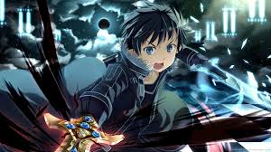
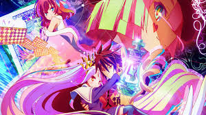
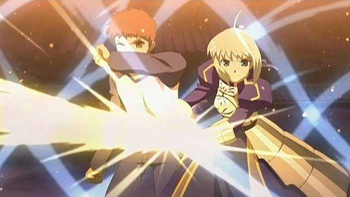

Here are some anime with their story
Sword Art Online
Sword Art Online is about a boy, Kazuto, that gets stuck in another world. The other world is a game that they have to beat all 100 levels of a castleto win. He gets stuck in the world because the creaters of the game made it so that there is no log out button. The game makes your realperon in the real world unconcious. If they die in the game, the are dead in the real world. He was a beta tester, so he knows the game. He was one of the fighters of the first level. and he met a girl named Asuna. The leader of the party dies because there was a weapon the boss used in the game that was not in the beta test (the leader was in the beata test and he was aming for a special final boss kill item). Kirito (Kazuto's name in the game) knew about the boss's sword because he had gotten on a defferent level in the beta test and the boss in that level had that wepon. Kirito and Asuna defeted the boss and Kirito got the final kill item. He was called a beater (beater tester + cheater). 2 years pass by and they are almost there. The leader of the party is the createrof the game, and Kirito finds that out and challenges him. Asuna almost dies, Kirito gets angry, Kirito kills the last noss, and they win the game.
No Game No Life
Sora and Shrio together make "Blank", the best gamers inthe world. They are challanged by a god of another world to play a chess game. They win but almost lost. The god (Ted) asks them if they have been born in the wrong wrold and they reply yes. Then Ted takes them to his world, witch is determined all by games, to live their rest of their lives. There are 16 races and Imanity is the last/worst race. The last king died and was know as the most foolish king because he had gien up most of the humanity's land, but there was a reason. So the King ordered a poker tornament to be held to chose who would be the next king. The knigs grad daughter, Stephanie Dola, is playing for the spot of King. She meets Sora and Shiro and they team up to win the spot of King. Sora and Shiro win but only one of tem can become King. So they play poker for over 1,000 games until they are allowed to be both King. Then, they make a plan to beat all the other races and play a game to determin who's god.
Fate Stay Night
Shirou Emiya is a boy with a skill that allwos him to turn anything into steel. His skill developes overtime and becomes even greater. He was chosen as one of the Masters for the Holy Grail War. He gets to summon a Servent that helps him in the war. The Holy Grail is something that will give you one wish for anything you want. Servents are strong heros that also want the Holy Grail for something. There are 7 people (usally magitians) and 7 Servents from different classes chosen to particiate. The seven classes are Saber, Archer, Lancer, Rider, Berserker, Caster, and Assassin. There is a unspoken rule for the fights to happen when no one's around. The servent he summons is from the saber calss, Artoria, or King Arthur. In the anime, King Arthur is a she and not a he. They fight together with another master, Tohsaka Rin, who's servent is from the Archer calss, Emiya(the future version on Shirou Emiya). They fight to get the Holy Grail, and whilethat happends, Shirou lears how to make things with his mind, but only weaponds. Tohsaka loses her servent while attacking Berserker but beats Berserker later. Berserker's master, Illyasviel Von Einzbern, the teams up with them. Toksaka and Illyasviel become enimies even though they live under the same roof in Shirou' house. They Finaly beat the last Servent and master, but choses to destroy it, even though Shirou loves Artoria and has to lose her in the end.